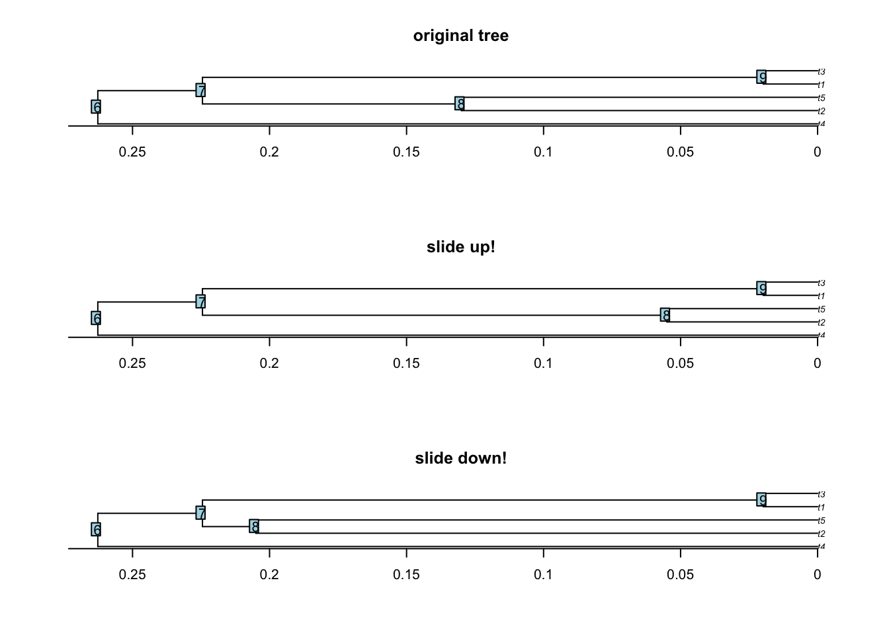
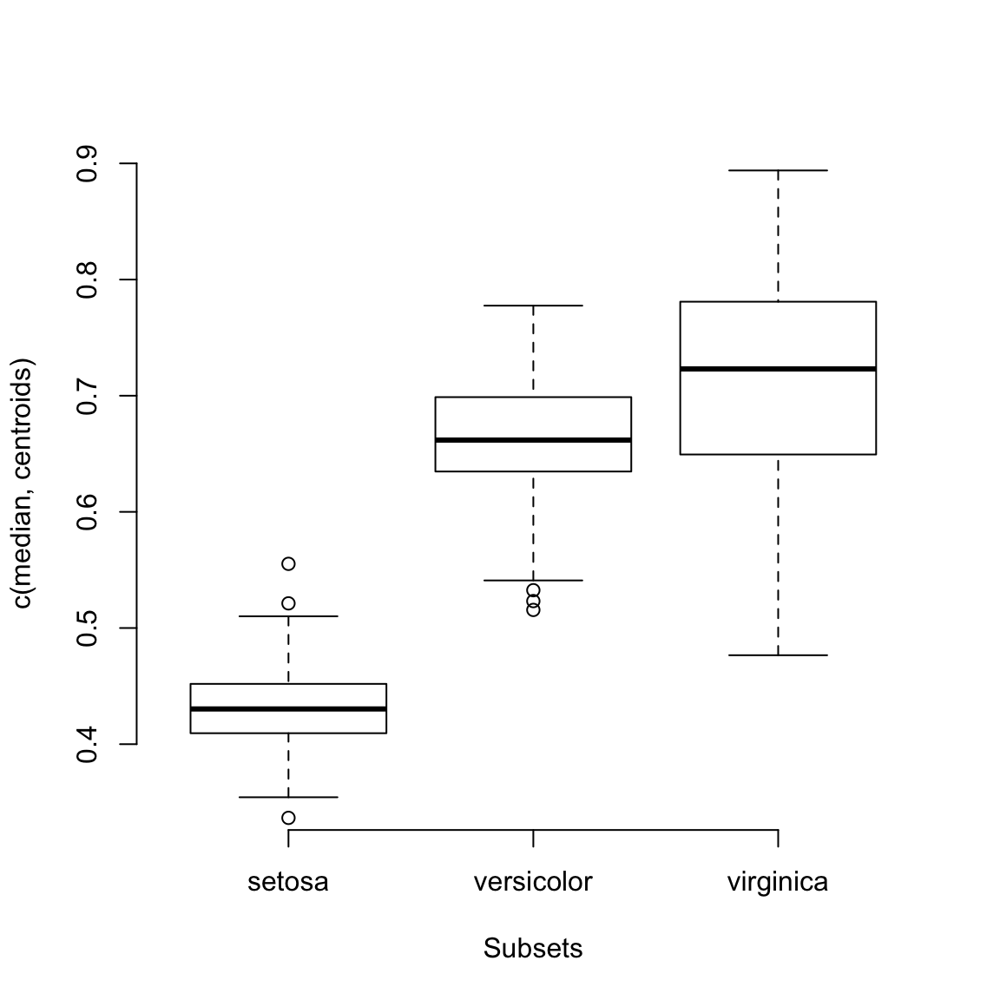
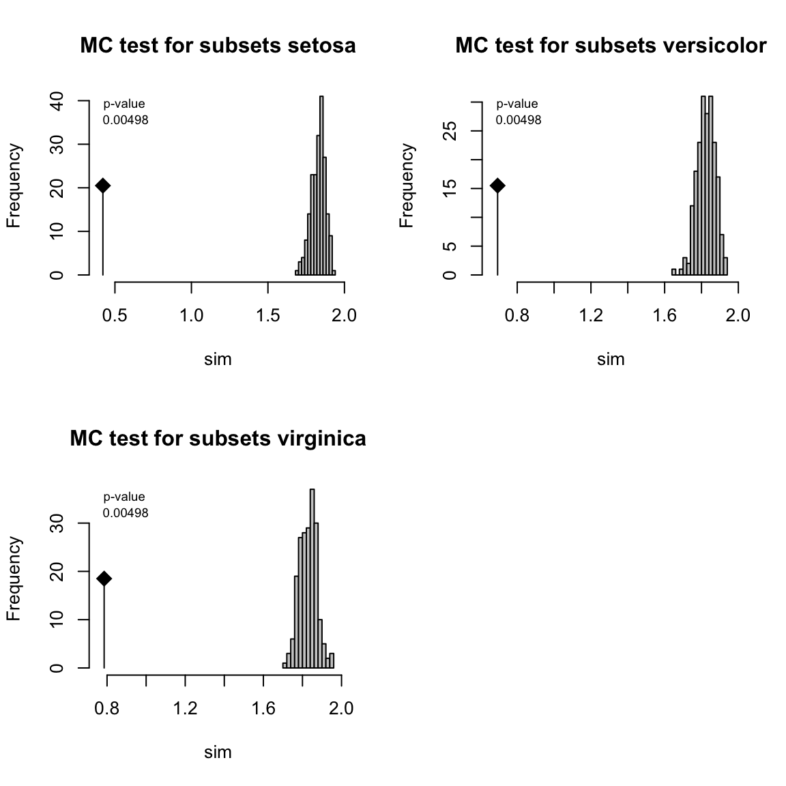
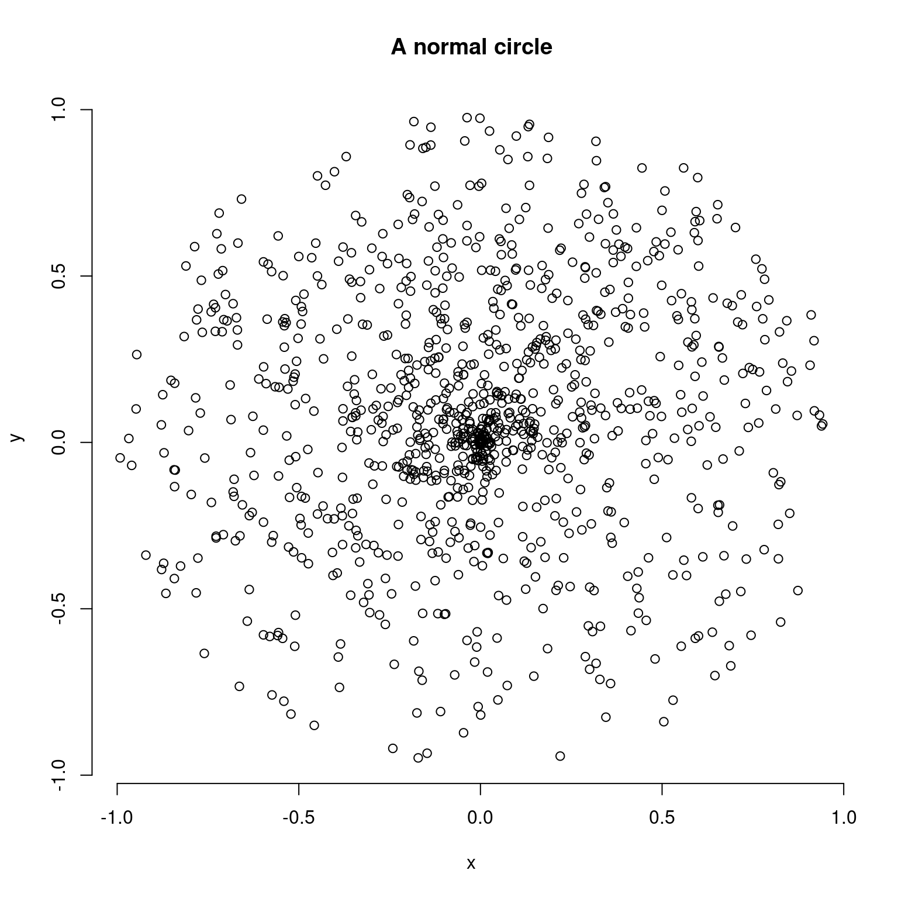

6 Other functionalities
The dispRity package also contains several other functions that are not specific to multidimensional analysis but that are often used by dispRity internal functions.
However, we decided to make these functions also available at a user level since they can be handy for certain specific operations!
You’ll find a brief description of each of them (alphabetically) here:
6.1 char.diff
This is yet another function for calculating distance matrices.
There are many functions for calculating pairwise distance matrices in R (stats::dist, vegan::vegdist, cluster::daisy or Claddis::calculate_morphological_distances) but this one is the dispRity one.
It is slightly different to the ones mentioned above (though not that dissimilar from Claddis::calculate_morphological_distances) in the fact that it focuses on comparing discrete morphological characters and tries to solve all the problems linked to these kind of matrices (especially dealing with special tokens).
The function intakes a matrix with either numeric or integer (NA included) or matrices with character that are indeed integers (e.g."0" and "1").
It then uses a bitwise operations architecture implemented in C that renders the function pretty fast and pretty modular.
This bitwise operations translates the character states into binary values.
This way, 0 becomes 1, 1 becomes 2, 2 becomes 4, 3 becomes 8, etc…
Specifically it can handle any rules specific to special tokens (i.e. symbols) for discrete morphological characters. For example, should you treat missing values "?" as NA (ignoring them) or as any possible character state (e.g. c("0", "1")?)? And how to treat characters with a ampersand ("&")? char.diff can answer to all these questions!
Let’s start by a basic binary matrix 4*3 with random integer:
## A random binary matrix
matrix_binary <- matrix(sample(c(0,1), 12, replace = TRUE), ncol = 4,
dimnames = list(letters[1:3], LETTERS[1:4]))By default, char.diff measures the hamming distance between characters:
## A B C D
## A 0 0 1 1
## B 0 0 1 1
## C 1 1 0 0
## D 1 1 0 0
## attr(,"class")
## [1] "matrix" "char.diff"Note that the results is just a pairwise distance (dissimilarity) matrix with some special dual class matrix and char.diff.
This means it can easily be plotted via the disparity package:

You can check all the numerous plotting options in the ?plot.char.diff manual (it won’t be developed here).
The char.diff function has much more options however (see all of them in the ?char.diff manual) for example to measure different differences (via method) or making the comparison work per row (for a distance matrix between the rows):
## a b c
## a 0.000000 1.414214 1.414214
## b 1.414214 0.000000 0.000000
## c 1.414214 0.000000 0.000000
## attr(,"class")
## [1] "matrix" "char.diff"We can however make it more interesting by playing with the different rules to play with different tokens.
First let’s create a matrix with morphological characters as numeric characters:
## A random character matrix
(matrix_character <- matrix(sample(c("0","1","2"), 30, replace = TRUE), ncol = 5,
dimnames = list(letters[1:6], LETTERS[1:5])))## A B C D E
## a "1" "1" "1" "1" "0"
## b "0" "2" "0" "2" "0"
## c "2" "2" "1" "2" "0"
## d "1" "2" "0" "0" "1"
## e "2" "2" "1" "1" "2"
## f "0" "2" "0" "2" "0"## A B C D E
## A 0.0 0.6 0.6 0.6 0.8
## B 0.6 0.0 0.4 0.4 0.8
## C 0.6 0.4 0.0 0.4 0.6
## D 0.6 0.4 0.4 0.0 1.0
## E 0.8 0.8 0.6 1.0 0.0
## attr(,"class")
## [1] "matrix" "char.diff"Here the characters are automatically converted into bitwise integers to be compared efficiently. We can now add some more special tokens like "?" or "0/1" for uncertainties between state "0" and "1" but not "2":
## Adding uncertain characters
matrix_character[sample(1:30, 8)] <- "0/1"
## Adding missing data
(matrix_character[sample(1:30, 5)] <- "?")## [1] "?"## The hamming difference between columns including the special characters
char.diff(matrix_character)## A B C D E
## A 0.0000000 0.6666667 1.00 0.50 0.6666667
## B 0.6666667 0.0000000 1.00 1.00 0.7500000
## C 1.0000000 1.0000000 0.00 0.00 0.2500000
## D 0.5000000 1.0000000 0.00 0.00 0.2500000
## E 0.6666667 0.7500000 0.25 0.25 0.0000000
## attr(,"class")
## [1] "matrix" "char.diff"Note here that it detected the default behaviours for the special tokens "?" and "/": "?" are treated as NA (not compared) and "/" are treated as both states (e.g. "0/1" is treated as "0" and as "1").
We can specify both the special tokens and the special behaviours to consider via special.tokens and special.behaviours.
The special.tokens are missing = "?", inapplicable = "-", uncertainty = "\" and polymorphism = "&" meaning we don’t have to modify them for now.
However, say we want to change the behaviour for "?" and treat them as all possible characters and treat "/" as only the character "0" (as an integer) we can specify them giving a behaviour function:
## Specifying some special behaviours
my_special_behaviours <- list(missing = function(x,y) return(y),
uncertainty = function(x,y) return(as.integer(0)))
## Passing these special behaviours to the char.diff function
char.diff(matrix_character, special.behaviour = my_special_behaviours)## A B C D E
## A 0.0 0.6 0.6 0.6 0.6
## B 0.6 0.0 0.8 0.8 0.8
## C 0.6 0.8 0.0 0.4 0.6
## D 0.6 0.8 0.4 0.0 1.0
## E 0.6 0.8 0.6 1.0 0.0
## attr(,"class")
## [1] "matrix" "char.diff"The results are quiet different as before! Note that you can also specify some really specific behaviours for any type of special token.
## Adding weird tokens to the matrix
matrix_character[sample(1:30, 8)] <- "%"
## Specify the new token and the new behaviour
char.diff(matrix_character, special.tokens = c(weird_one = "%"),
special.behaviours = list(
weird_one = function(x,y) return(as.integer(42)))
)## A B C D E
## A 0 1 1 0 NaN
## B 1 0 1 1 NaN
## C 1 1 0 0 0
## D 0 1 0 0 0
## E NaN NaN 0 0 0
## attr(,"class")
## [1] "matrix" "char.diff"Of course the results can be quiet surprising then… But that’s the essence of the modularity. You can see more options in the function manual ?char.diff!
6.2 clean.data
This is a rather useful function that allows matching a matrix or a data.frame to a tree (phylo) or a distribution of trees (multiPhylo).
This function outputs the cleaned data and trees (if cleaning was needed) and a list of dropped rows and tips.
## Generating a trees with labels from a to e
dummy_tree <- rtree(5, tip.label = LETTERS[1:5])
## Generating a matrix with rows from b to f
dummy_data <- matrix(1, 5, 2, dimnames = list(LETTERS[2:6], c("var1", "var2")))
##Cleaning the trees and the data
(cleaned <- clean.data(data = dummy_data, tree = dummy_tree))## $tree
##
## Phylogenetic tree with 4 tips and 3 internal nodes.
##
## Tip labels:
## D, B, E, C
##
## Rooted; includes branch lengths.
##
## $data
## var1 var2
## B 1 1
## C 1 1
## D 1 1
## E 1 1
##
## $dropped_tips
## [1] "A"
##
## $dropped_rows
## [1] "F"6.3 crown.stem
This function quiet handily separates tips from a phylogeny between crown members (the living taxa and their descendants) and their stem members (the fossil taxa without any living relatives).
data(BeckLee_tree)
## Diving both crow and stem species
(crown.stem(BeckLee_tree, inc.nodes = FALSE))## $crown
## [1] "Dasypodidae" "Bradypus" "Myrmecophagidae" "Todralestes"
## [5] "Potamogalinae" "Dilambdogale" "Widanelfarasia" "Rhynchocyon"
## [9] "Procavia" "Moeritherium" "Pezosiren" "Trichechus"
## [13] "Tribosphenomys" "Paramys" "Rhombomylus" "Gomphos"
## [17] "Mimotona" "Cynocephalus" "Purgatorius" "Plesiadapis"
## [21] "Notharctus" "Adapis" "Patriomanis" "Protictis"
## [25] "Vulpavus" "Miacis" "Icaronycteris" "Soricidae"
## [29] "Solenodon" "Eoryctes"
##
## $stem
## [1] "Daulestes" "Bulaklestes" "Uchkudukodon"
## [4] "Kennalestes" "Asioryctes" "Ukhaatherium"
## [7] "Cimolestes" "unnamed_cimolestid" "Maelestes"
## [10] "Batodon" "Kulbeckia" "Zhangolestes"
## [13] "unnamed_zalambdalestid" "Zalambdalestes" "Barunlestes"
## [16] "Gypsonictops" "Leptictis" "Oxyclaenus"
## [19] "Protungulatum" "Oxyprimus"Note that it is possible to include or exclude nodes from the output. To see a more applied example: this function is used in chapter 03: specific tutorials.
6.4 get.bin.ages
This function is similar than the crown.stem one as it is based on a tree but this one outputs the stratigraphic bins ages that the tree is covering.
This can be useful to generate precise bin ages for the chrono.subsets function:
## [1] 132.9000 129.4000 125.0000 113.0000 100.5000 93.9000 89.8000 86.3000
## [9] 83.6000 72.1000 66.0000 61.6000 59.2000 56.0000 47.8000 41.2000
## [17] 37.8000 33.9000 28.1000 23.0300 20.4400 15.9700 13.8200 11.6300
## [25] 7.2460 5.3330 3.6000 2.5800 1.8000 0.7810 0.1260 0.0117
## [33] 0.0000Note that this function outputs the stratigraphic age limits by default but this can be customisable by specifying the type of data (e.g. type = "Eon" for eons).
The function also intakes several optional arguments such as whether to output the startm end, range or midpoint of the stratigraphy or the year of reference of the International Commission of Stratigraphy.
To see a more applied example: this function is used in chapter 03: specific tutorials.
6.5 pair.plot
This utility function allows to plot a matrix image of pairwise comparisons. This can be useful when getting pairwise comparisons and if you’d like to see at a glance which pairs of comparisons have high or low values.
## Random data
data <- matrix(data = runif(42), ncol = 2)
## Plotting the first column as a pairwise comparisons
pair.plot(data, what = 1, col = c("orange", "blue"), legend = TRUE, diag = 1)
Here blue squares are ones that have a high value and orange ones the ones that have low values.
Note that the values plotted correspond the first column of the data as designated by what = 1.
It is also possible to add some tokens or symbols to quickly highlight to specific cells, for example which elements in the data are below a certain value:
## The same plot as before without the diagonal being the maximal observed value
pair.plot(data, what = 1, col = c("orange", "blue"), legend = TRUE, diag = "max")
## Highlighting with an asterisk which squares have a value below 0.2
pair.plot(data, what = 1, binary = 0.2, add = "*", cex = 2)
This function can also be used as a binary display when running a series of pairwise t-tests.
For example, the following script runs a wilcoxon test between the time-slices from the disparity example dataset and displays in black which pairs of slices have a p-value below 0.05:
## Loading disparity data
data(disparity)
## Testing the pairwise difference between slices
tests <- test.dispRity(disparity, test = wilcox.test, correction = "bonferroni")
## Plotting the significance
pair.plot(as.data.frame(tests), what = "p.value", binary = 0.05)
6.6 reduce.matrix
This function allows to reduce columns or rows of a matrix to make sure that there is enough overlap for further analysis.
This is particularly useful if you are going to use distance matrices since it uses the vegan::vegdist function to test whether distances can be calculated or not.
For example, if we have a patchy matrix like so (where the black squares represent available data):
set.seed(1)
## A 10*5 matrix
na_matrix <- matrix(rnorm(50), 10, 5)
## Making sure some rows don't overlap
na_matrix[1, 1:2] <- NA
na_matrix[2, 3:5] <- NA
## Adding 50% NAs
na_matrix[sample(1:50, 25)] <- NA
## Illustrating the gappy matrix
image(t(na_matrix), col = "black")
We can use the reduce.matrix to double check whether any rows cannot be compared.
The functions needs as an input the type of distance that will be used, say a "gower" distance:
## $rows.to.remove
## [1] "9" "1"
##
## $cols.to.remove
## NULLWe can not remove the rows 1 and 9 and see if that improved the overlap:

6.7 slice.tree
This function is a modification of the paleotree::timeSliceTree function that allows to make slices through a phylogenetic tree.
Compared to the paleotree::timeSliceTree, this function allows a model to decide which tip or node to use when slicing through a branch (whereas paleotree::timeSliceTree always choose the first available tip alphabetically).
The models for choosing which tip or node are the same as the ones used in the chrono.subsets and are described in chapter 03: specific tutorials.
The function works by using at least a tree, a slice age and a model:
set.seed(1)
## Generate a random ultrametric tree
tree <- rcoal(20)
## Add some node labels
tree$node.label <- letters[1:19]
## Add its root time
tree$root.time <- max(tree.age(tree)$ages)
## Slicing the tree at age 0.75
tree_75 <- slice.tree(tree, age = 0.75, "acctran")
## Showing both trees
par(mfrow = c(1,2))
plot(tree, main = "original tree")
axisPhylo() ; nodelabels(tree$node.label, cex = 0.8)
abline(v = (max(tree.age(tree)$ages) - 0.75), col = "red")
plot(tree_75, main = "sliced tree")
6.8 slide.nodes and remove.zero.brlen
This function allows to slide nodes along a tree! In other words it allows to change the branch length leading to a node without modifying the overall tree shape. This can be useful to add some value to 0 branch lengths for example.
The function works by taking a node (or a list of nodes), a tree and a sliding value. The node will be moved “up” (towards the tips) for the given sliding value. You can move the node “down” (towards the roots) using a negative value.
set.seed(42)
## Generating simple coalescent tree
tree <- rcoal(5)
## Sliding node 8 up and down
tree_slide_up <- slide.nodes(8, tree, slide = 0.075)
tree_slide_down <- slide.nodes(8, tree, slide = -0.075)
## Display the results
par(mfrow = c(3,1))
plot(tree, main = "original tree") ; axisPhylo() ; nodelabels()
plot(tree_slide_up, main = "slide up!") ; axisPhylo() ; nodelabels()
plot(tree_slide_down, main = "slide down!") ; axisPhylo() ; nodelabels()
The remove.zero.brlen is a “clever” wrapping function that uses the slide.nodes function to stochastically remove zero branch lengths across a whole tree.
This function will slide nodes up or down in successive postorder traversals (i.e. going down the tree clade by clade) in order to minimise the number of nodes to slide while making sure there are no silly negative branch lengths produced!
By default it is trying to slide the nodes using 1% of the minimum branch length to avoid changing the topology too much.
set.seed(42)
## Generating a tree
tree <- rtree(20)
## Adding some zero branch lengths (5)
tree$edge.length[sample(1:Nedge(tree), 5)] <- 0
## And now removing these zero branch lengths!
tree_no_zero <- remove.zero.brlen(tree)
## Exaggerating the removal (to make it visible)
tree_exaggerated <- remove.zero.brlen(tree, slide = 1)
## Check the differences
any(tree$edge.length == 0)## [1] TRUE## [1] FALSE## [1] FALSE## Display the results
par(mfrow = c(3,1))
plot(tree, main = "with zero edges")
plot(tree_no_zero, main = "without zero edges!")
plot(tree_exaggerated, main = "with longer edges")
6.9 tree.age
This function allows to quickly calculate the ages of each tips and nodes present in a tree.
## ages elements
## 1 0.707 t7
## 2 0.142 t2
## 3 0.000 t3
## 4 1.467 t8
## 5 1.366 t1
## 6 1.895 t5
## 7 1.536 t6
## 8 1.456 t9
## 9 0.815 t10
## 10 2.343 t4
## 11 3.011 11
## 12 2.631 12
## 13 1.854 13
## 14 0.919 14
## 15 0.267 15
## 16 2.618 16
## 17 2.235 17
## 18 2.136 18
## 19 1.642 19It also allows to set the age of the root of the tree:
## ages elements
## 1 23.472 t7
## 2 4.705 t2
## 3 0.000 t3
## 4 48.736 t8
## 5 45.352 t1
## 6 62.931 t5
## 7 51.012 t6
## 8 48.349 t9
## 9 27.055 t10
## 10 77.800 t4
## 11 100.000 11
## 12 87.379 12
## 13 61.559 13
## 14 30.517 14
## 15 8.875 15
## 16 86.934 16
## 17 74.235 17
## 18 70.924 18
## 19 54.533 19Usually tree age is calculated from the present to the past (e.g. in million years ago) but it is possible to reverse it using the order = present option:
## ages elements
## 1 2.304 t7
## 2 2.869 t2
## 3 3.011 t3
## 4 1.544 t8
## 5 1.646 t1
## 6 1.116 t5
## 7 1.475 t6
## 8 1.555 t9
## 9 2.196 t10
## 10 0.668 t4
## 11 0.000 11
## 12 0.380 12
## 13 1.157 13
## 14 2.092 14
## 15 2.744 15
## 16 0.393 16
## 17 0.776 17
## 18 0.876 18
## 19 1.369 19